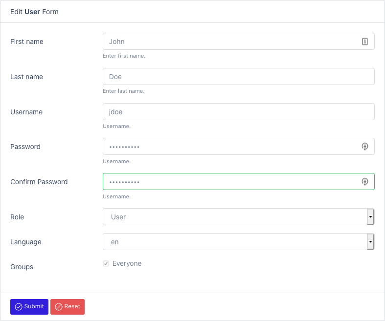

User Authentication
Internal (Database)
Out of the box, only one user is created during installation. It is the admin account. This account is always persisted in the database no matter what.
You can also create internal users when needed.
See Create User

External
When an external authentication mechanism is used, the users are automatically synced when they first connect to the platform.
Cognito (Amazon)
To use Cognito with Elastic bean stalk, you need to configure https first: https://docs.aws.amazon.com/elasticbeanstalk/latest/dg/configuring-https.html
Activate Cognito in your AWS tenant:
- https://www.baeldung.com/spring-security-oauth-cognito
- https://docs.aws.amazon.com/cognito/latest/developerguide/getting-started-with-cognito-user-pools.html
Activate the amazon profile:
- Modify the service.conf file (in /opt/datamaker)
JAVA_OPTS='-Xmx512M -Dspring.profiles.active=amazon,cognito -Dlogging.pattern.console= -Dlogging.file.path=/opt/datamaker/logs'
You can also use an environment variable: export spring_profiles_active=cognito
Create application-amazon.properties inside ${application.config.path}/jar directory. Make sure to select the jar file type. You can use the file manager to do that: Create resource file
Fill out the clientId, clientSecret, server, issuerUri (if needed)
spring:
security:
oauth2:
client:
registration:
cognito:
clientId: ...
clientSecret: ....
scope: openid
redirect-uri: http://{server}/datamaker/login/oauth2/code/cognito
clientName: datamaker-client
provider:
cognito:
issuerUri: https://cognito-idp.ca-central-1.amazonaws.com/ca-central-1_zlOxEgek0
user-name-attribute: cognito:username
Azure AD
Activate OAuth in your Azure tenant:
- https://docs.microsoft.com/en-ca/azure/active-directory/develop/quickstart-register-app
- https://docs.microsoft.com/en-us/azure/developer/java/spring-framework/configure-spring-boot-starter-java-app-with-azure-active-directory
- https://github.com/Azure/azure-sdk-for-java/tree/master/sdk/spring/azure-spring-boot-samples/azure-spring-boot-sample-active-directory-backend
Activate the azure profile:
- Modify the service.conf file (in /opt/datamaker)
JAVA_OPTS='-Xmx512M -Dspring.profiles.active=azure -Dlogging.pattern.console= -Dlogging.file.path=/opt/datamaker/logs'
You can also use an environment variable: export spring_profiles_active=azure
Create application-azure.yml inside ${application.config.path}/jar directory. Make sure to select the jar file type. You can use the file manager to do that: Create resource file
Fill out the client-id, client-secret, server, tenant-id, allowed-groups, admin.roles, user.roles
azure:
activedirectory:
tenant-id: 3-312-312-312-312
client-id: 213-312-312-86a8-3212
client-secret: 3212321231
user-group:
allowed-group-names: group1, group2
admn:
roles: group1
user:
roles: group2
Ldap (generic)
Activate the ldap profile:
- Modify the service.conf file (in /opt/datamaker)
JAVA_OPTS='-Xmx512M -Dspring.profiles.active=ldap -Dlogging.pattern.console= -Dlogging.file.path=/opt/datamaker/logs'
You can also use an environment variable: export spring_profiles_active=ldap
Create application-azure.properties inside ${application.config.path}/jar directory. Make sure to select the jar file type. You can use the file manager to do that: Create resource file
Fill out the userSearchFilter, url, domain, rootDn, OU
# LDAP AUTHENTICATION MANAGER
security.ldap.userSearchFilter=userPrincipalName={0}
security.ldap.url=ldap://azure.datamaker.ai:389/
security.ldap.domain=datamaker.ai
security.ldap.rootDn=DC=azure,DC=datamaker,DC=ai
OU=AADDC%20Users,DC=azure,DC=datamaker,DC=ai
Active directory
Activate the ldap-ad profile:
- Modify the service.conf file (in /opt/datamaker)
JAVA_OPTS='-Xmx512M -Dspring.profiles.active=ldap-ad -Dlogging.pattern.console= -Dlogging.file.path=/opt/datamaker/logs'
You can also use an environment variable: export spring_profiles_active=ldap
Create application-ldap-ad.properties inside ${application.config.path}/jar directory. Make sure to select the jar file type. You can use the file manager to do that: Create resource file
Fill out the required properties.
# AUTHORITIES
admin.roles=MANAGERS
user.roles=DEVELOPERS
# LDAP AUTHENTICATION MANAGER
security.ldap.userDnPatterns="uid={0},ou=people"
security.ldap.userSearchBase=
security.ldap.userSearchFilter=
security.ldap.groupSearchBase="ou=groups"
security.ldap.groupSearchFilter=(uniqueMember={0})
security.ldap.url=ldap://localhost:8389/dc=springframework,dc=org
security.ldap.passwordAttribute=userPassword
security.ldap.managerDn=
security.ldap.managerPassword=
See OAuth2